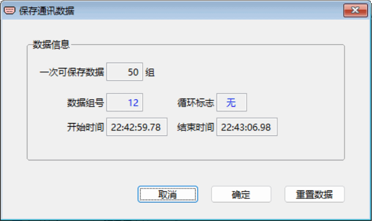

保存通讯数据
用户在进行串口测试中得到的通讯数据，会先在内存暂存而不会自行保存到文件。若需保存为历史记录，可使用
“保存通讯数据”模块功能。点击主界面菜单中或工具栏上的“保存通讯数据”图标，将打开如下图所示窗口。窗口各按钮的功能作用：
【取消】——不保存通讯数据，返回主界面。
【确定】——保存通讯数据，返回主界面。
【重置数据】——将数据组号清0、循环标志置“无”，释放内存暂存数据，返回主界面。
其中一次可保存的数据组数可在“设置”模块中进行设置或修改，数据组号表示已经有多少组通讯数据，循环标志内容“是”时表示已经有超过50组的暂存通讯数据而开始循环存放数据了，开始、结束时间表示最先一组通讯数据的时间和最后一组通讯数据的时间。
